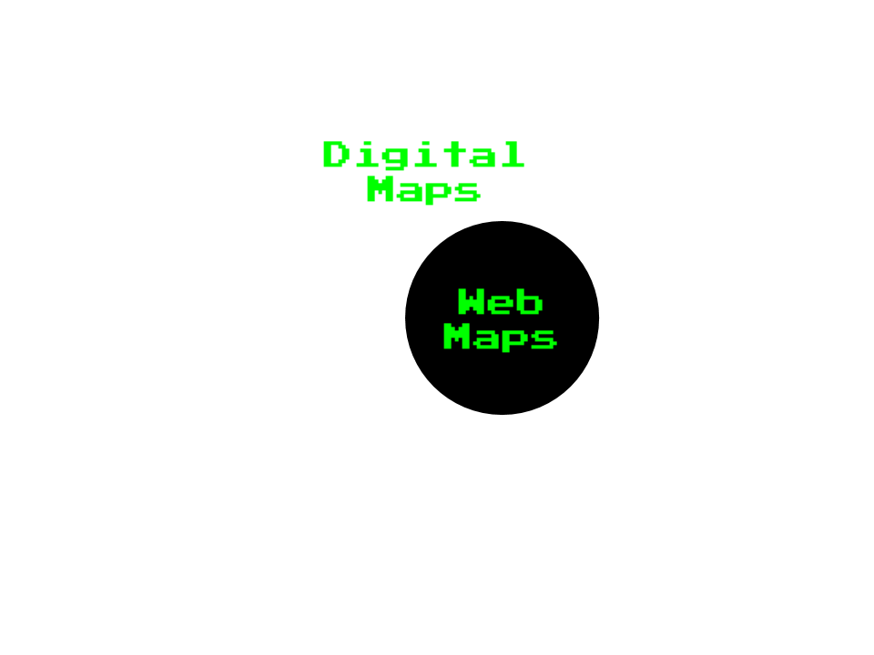
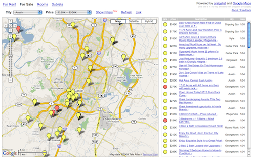
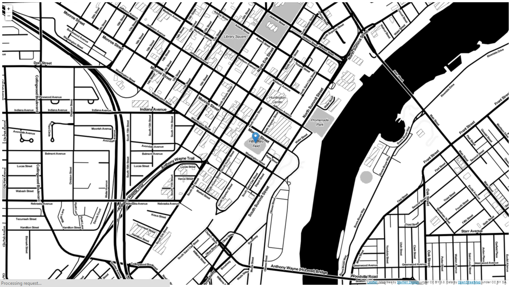
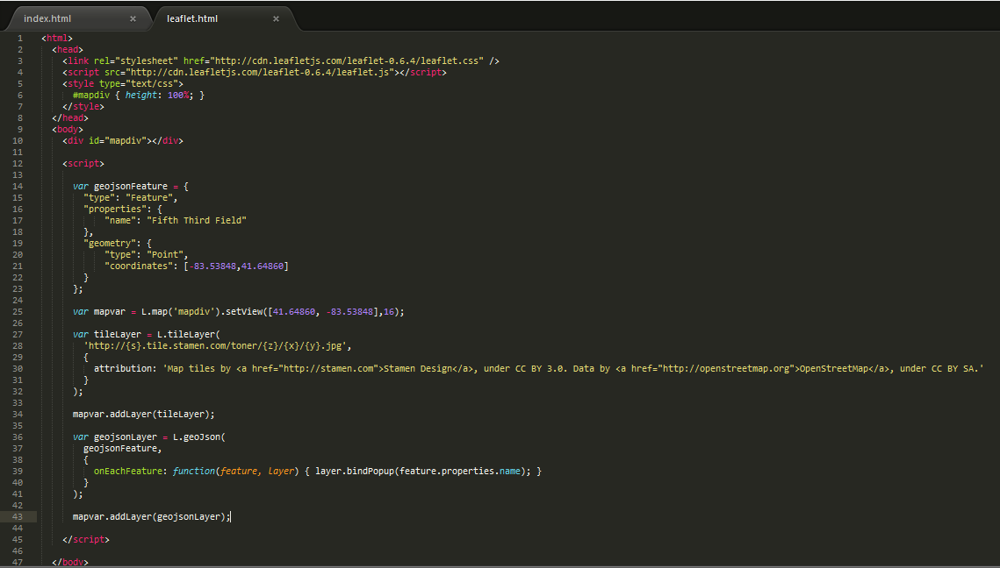

Part 1:
Web Map Basics
Housekeeping!
You can follow along here:
[Link goes here]. Links are in blue boxes,
green is just emphasis.
The basic principles of web mapping
History of webmaps
Main components
Exceptions to the norm
Why?
Goals
- Understand the origins of the current web mapping paradigm
- Be able to identify the different basic components of web maps and how they work together
- Become more cognizant of the variety of ways maps can be produced for the web
What is a web map?
How do web maps differ from digital maps?

Digital: involves a computer, but might not be accessible by the internet.
Both are obviously quite different from analog maps, such as paper maps and atlases
Web maps are typically:
Viewed in your browser
Accessed through internet
Interactive
- pan
- click
- zoom
- filter data
- ...

Making maps for
mobile devices can be similar, but we're not talking about that today.

We're also not talking about
digital globes like
Google EarthHistory:
How did web maps come to be?

First, there were digital maps like
ArcGIS.
GIS for web → Bad UX

1996: Mapquest launched its web service.
Directions! Online! Revolutionary!
It wasn't perfect...
Big problem: slow to load
- Required a full page refresh to scroll or zoom
- Always aligned to the boundaries of the map image.
2005: Google Maps changes the game
What was the revolution?
Was it the interface?
The red marker?
The weather widget?
No!
2 big game changers
- tiles
- GoogleMaps API access
Tiles

Created first web map mashup using house listings from Craigslist and hacked GoogleMaps

Google's response: This is cool. Everyone should be able to do this! Let's open up the GoogleMaps API!
And they did
What are the components that make up a typical web map?
Body as a metaphor
Both bodies and web maps have components and systems that interact and intertwine.
Instead of cells, maps have data.
Instead of circulatory and digestive systems, web maps have styles and tiles and servers.
All tiles
=
same size! 256x256 pixels
same boundaries
Tiles could be a
- road map
- satellite image
- terrain/topographic map
- ................
Really, anything that's a raster

All these little tiles load
way faster than one big map.
Web maps like this load the tiles that are on your screen. If the map is “smart,” it will pre-load tiles outside of the screen, along the top, bottom, left, and right.

AKA:
slippy mapEach zoom level has its own set of tiles
 Zoom level 0: one tile for the world.
Zoom level 0: one tile for the world.With each additional zoom level, the number of tiles increases exponentially.
 Zoom level 1: 4 tiles for the world.
Zoom level 1: 4 tiles for the world. Zoom level 2, 3, 4, 5
Zoom level 2, 3, 4, 5 Zoom level 13
Zoom level 13Tiles are rendered in advance (usually) then stored in a cache
Map tiles are just images on the web, so you can link to them individually.
Let's break down the URL.
http://tile.openstreetmap.org/4/2/6.png -- this is the name of the tile server.
http://tile.openstreetmap.org/4/2/6.png -- this is the z value, or the zoom level.
http://tile.openstreetmap.org/4/2/6.png -- This is the x/y value, or the place in the grid where the tile lives.
Activity:
Using your web browser and the http://tile.openstreetmap.org/z/x/y.png URL pattern, try to find Toledo, OH in the OSM tile set at zoom levels 4, 6, and 8.
(Message me the URL if you find it)
Hold your horses, Ryan!
This slide intentionally blank
All the other slippy maps and slippy map software followed Google's lead, with tiles at the base.
This also means all slippy maps are based on a variant of the Mercator projection.
Mercator projection was designed for sailors BUT it works well for flat maps.
However, one must be mindful of Mercator's limitations, namely area distortion moving towards the poles.
A collection of tiles makes up the map's base layer.
When we layer things like markers on top of them, we call those data layers or content layers or feature layers.
*(Not every web map contains a feature layer, but they are fairly typical.)
They are often vector layers (point, line, polygon). Sometimes you can interact with them (clicking to produce a popup, for example).
Filetypes: GIS uses
shapefiles, but web maps prefer
KML, or more recently,
GeoJSONHere's the breakdown of how these pieces fit together:

The simplest possible web map: http://bit.ly/1B20nhJ
What does the javascript library do? Grabs the tiles, adds content layer, handles interaction.
Open Source Javascript libraries
The simplified story of webmaps, in review:
- The world is split into 256 x 256 pixel images at various zoom levels
- Those images are raster-based (PNG, JPEG) to create a base layer
- Vector data goes on top of the base layer for interaction
3 exceptions to the simplified story!
Exception #1: Tiles are always rasters EXCEPT when they're not
 vector tiles!
vector tiles! What are they?
Raster: ask for data to fit into tile, don't include geometry, attributes, or metadata for features in baselayer
It's just an image!
vector tiles: features stored as vectors and can include geometry, attribute and metadata, still conform to 256X256px grid pattern, but featuers can overrun grid boundaries
It's new and a bit complicated, but
MapBox has integrated them into their webmap services
Exception #2: Can’t interact with features on a raster. BUT
UTFGrid (Mapbox invention) makes it possible.

UTFGrid is an invisble tile layer made up of arbitrary letters which are indexes into the clickable data

Stamen used this technique on the
Parks Conservancy map.Exception #3:
D3 exists outside the world of tiles
you can’t easily make a road map in D3 BUT can do things that are clumsy in slippy maps like...

choropleth maps or...
sta.mn/jyx
cartograms or...
sta.mn/q99
different map projections (in the browser!)
sta.mn/jfsVery powerful, but steep learning curve
So.
Where do I start?
Do I need to make my own custom tiles?
Style your map with
CartoCSS (or just carto)
You can host these files on
MapBox, or...
Do I need a content layer?
No? Put all your data into the tiles, possibly using UTFGrid for interactivity
Finally,
CartoDB takes care of almost all of this for you!
Presentation made with
big